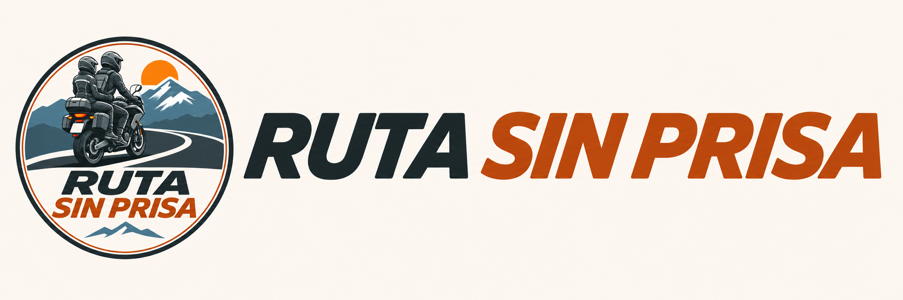

Camino de Santiago · Etapa 3
Vídeo de la etapa y recorrido propuesto entre Sarria y Portomarín.
Ver la ruta
Vídeo de la etapa y recorrido propuesto entre Sarria y Portomarín.
Ver la rutaRuta Sin Prisa nace de algo sencillo: salir en moto y tener tiempo para disfrutar del camino. A veces basta con tomar una carretera secundaria, pasar por un pueblo que no conocíamos o parar un rato en un mirador. Al volver a casa, son esos momentos los que más ganas tenemos de contar.
De ahí salió la idea de guardar las rutas, grabar algunos tramos y compartir lo que encontramos. Empezamos por Cataluña y sus alrededores, cerca de casa. Es curioso lo que cambia un lugar conocido cuando llegas por otra carretera y te das tiempo para parar.
Aquí iremos reuniendo recorridos, vídeos y pequeñas historias de cada salida. Si alguna te da ganas de coger la moto y descubrir un sitio nuevo, o de volver por un camino distinto a un sitio que ya conoces, habrá valido la pena compartirla.
No importa el destino. Disfruta del camino.